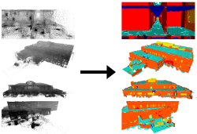
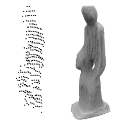
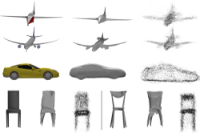
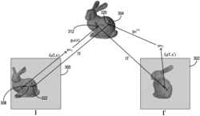
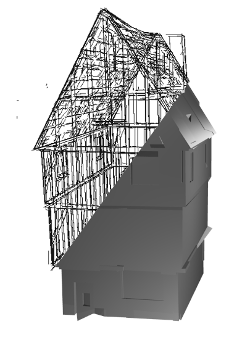
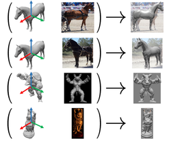
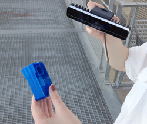

Publications

VASAD: a Volume and Semantic dataset for Building Reconstruction from Point Clouds
P.-A. Langlois, Y. Xiao, A. Boulch and R. Marlet
in ICPR, 2022
Abstract
3D scene reconstruction has important applications to help to produce digital twins of existing buildings.
While the community has mostly focused on surface reconstruction or semantic segmentation as separate problems, the joint reconstruction of both volumes and semantics has little been discussed, mostly due to the lack of large scale volume datasets with semantic annotations.
In this work, we introduce a new dataset called VASAD for Volume And Semantic Architectural Dataset. It is composed of 6 building models, with full volume description and semantic labels. It approximately represents 62,000 m² of building floors, making it large enough for the development and evaluation of learning-based approaches.
We propose several methods to jointly reconstruct both geometry and semantics and evaluate on the test set of the dataset. We show that the proposed dataset is challenging enough to stimulate research.

NeeDrop: Unsupervised Shape Representation from Sparse Point Clouds using Needle Dropping
A. Boulch, P.-A. Langlois, G. Puy and R. Marlet
in 3DV, 2021
Abstract
There has been recently a growing interest for implicit shape representations, with applications including surface reconstruction and generation. Contrary to explicit representations, they have no resolution limitations and they easily deal with a wide variety of surface topologies. To learn these implicit representations, current approaches rely on a certain level of shape supervision (e.g., inside/outside information or distance-to-shape knowledge), or at least require a dense point cloud (to approximate well enough the distance-to-shape). In contrast, we introduce NeeDrop, an unsupervised method for learning shape representations from possibly extremely sparse point clouds. Like in Buffon's needle problem, we drop (sample) needles on the point cloud and consider that, statistically, close to the surface, the needle end points lie on opposite sides of the surface. No shape knowledge is required and the point cloud can be highly sparse, e.g., as lidar point clouds acquired by vehicles. Previous unsupervised shape representation approaches fail to produce good-quality results on this kind of data. We obtain quantitative results on par with existing supervised approaches on shape reconstruction datasets and show promising qualitative results on hard autonomous driving datasets such as KITTI.
[Code]

3D Reconstruction by Parametrized Surface Mapping
P-A. Langlois, M. Fisher, O. Wang, V. Kim, A. Boulch, R. Marlet, B. Russell
in ICIP, 2021
Abstract
We introduce an approach for computing a 3D mesh from one or more views of an object by establishing dense correspondences between pixels in the views and 3D locations on a learnable parameterized surface.
We propose a multi-view shape encoder that can be jointly trained with the AtlasNet surface parameterization.
The shape is further refined using a novel geometric cycle-consistency loss between the learnable parameterized surface and input views.
We demonstrate the efficacy of our approach on the ShapeNet-COCO dataset.

Reconstructing three-dimensional scenes using multi-view cycle projection
V. Kim, P-A. Langlois, M. Fisher, B. Russell, O. Wang
US Patent US10937237B1, 2021
Abstract
Methods, systems, and non-transitory computer readable storage media are disclosed for reconstructing three-dimensional object meshes from two-dimensional images of objects using multi-view cycle projection. For example, the disclosed system can determine a multi-view cycle projection loss across a plurality of images of an object via an estimated three-dimensional object mesh of the object. For example, the disclosed system uses a pixel mapping neural network to project a sampled pixel location across a plurality of images of an object and via a three-dimensional mesh representing the object. The disclosed system determines a multi-view cycle consistency loss based on a difference between the sampled pixel location and a cycle projection of the sampled pixel location and uses the loss to update the pixel mapping neural network, a latent vector representing the object, or a shape generation neural network that uses the latent vector to generate the object mesh.

Surface Reconstruction from 3D Line Segments
P-A. Langlois, A. Boulch, R. Marlet
in 3DV, 2019 (oral)
Abstract
In man-made environments such as indoor scenes, when point-based approaches fail due to the lack of texture, lines can still be detected and used to support surfaces. We present in this paper a method for watertight piecewise-planar surface reconstruction from a set of 3D line segments.
Our algorithm has two main stages. First, planes are extracted by a RANSAC approach on line segments that allows multiple shape support. Second, after creation of a plane arrangement, each 3D cell of the complex is labeled as either full or empty based on line attachment to planes, visibility information, and regularization. The reconstructed surface is the interface between full and empty cells. Experiments show the robustness to sparse input data, noise and outliers.
[Paper] [Code]

Pose from Shape: Deep Pose Estimation for Arbitrary 3D Objects
Y. Xiao, X. Qiu, P-A. Langlois, M. Aubry, R. Marlet
in BMVC, 2019
Abstract
Most deep pose estimation methods need to be trained for specific object instances or categories. In this work we propose a completely generic deep pose estimation approach, which does not require the network to have been trained on relevant categories, nor objects in a category to have a canonical pose. We believe this is a crucial step to design robotic systems that can interact with new objects in the wild not belonging to a predefined category. Our main insight is to dynamically condition pose estimation with a representation of the 3D shape of the target object. More precisely, we train a Convolutional Neural Network that takes as input both a test image and a 3D model, and outputs the relative 3D pose of the object in the input image with respect to the 3D model. We demonstrate that our method boosts performances for supervised category pose estimation on standard benchmarks, namely Pascal3D+, ObjectNet3D and Pix3D, on which we provide results superior to the state of the art. More importantly, we show that our network trained on everyday man-made objects from ShapeNet generalizes without any additional training to completely new types of 3D objects by providing results on the LINEMOD dataset as well as on natural entities such as animals from ImageNet.
[Paper] [Code]

Automated method of recognition of an object
M. Aubry, P-A. Langlois
WO Patent number WO2018189627A1, 2017
Abstract
The invention pertains to a method for recognizing a real object, comprising steps for: - creating a base of digital models of objects comprising at least one depth map; - training a neuronal network in the recognition of the models; - capturing a view of the object and generating several depth maps, with the aid of a sensor of RGBD type; - for fusing the depth maps associated with the captured view of the object with a view to obtaining an audited map; and, - for comparing the audited map with those of the database.
Prediction of Asphalt Concrete Low-temperature Cracking Resistance on the Basis of Different Constitutive Models
M. Gajewski, P-A. Langlois
in Procedia Engineering, 2014
Abstract
The top-down cracking of asphalt concrete pavements caused by thermal factors are very common in Poland. Cracking can occur
as a result of a single intensive event (severe temperature drop) or as a result of cyclic long-term less severe events (thermal fatigue).
In both cases precise constitutive modeling of materials is a key issue for rational prediction of the pavement behavior. As a starting
point the Thermal Stress Restrained Specimen Test (TSRST) in which the shrinkage proceeds due to temperature reduction is
analyzed and compared with experiment results for chosen mix. The TSRST is modeled using the finite element method in a frame
of thermo-mechanics with the so-called weak coupling between thermal and mechanical effects. Mechanical properties are taken
into account by the constitutive relations of elasticity, visco-elasticity and continuum cracking models. Among the continuum
cracking models special place is devoted to cohesive zone model which is a new development in fracture mechanics. Cohesive
zone model in many works is presented as the only solution for rational modeling of TSRST and this notion is also addressed
herein.
[Paper]